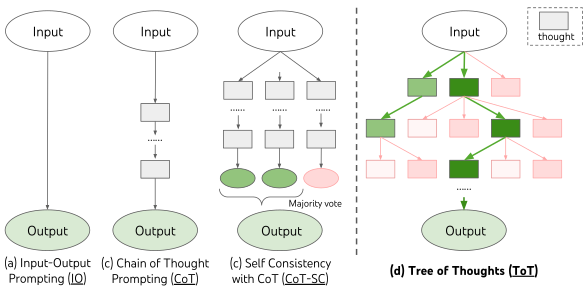
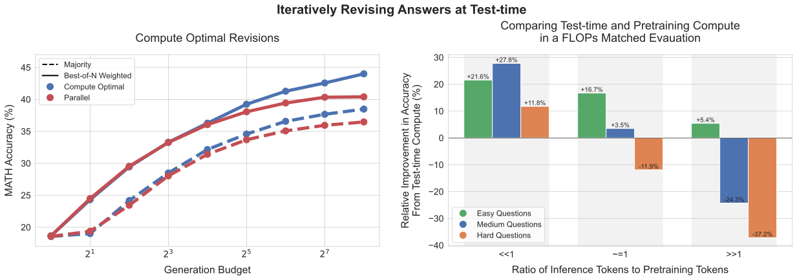
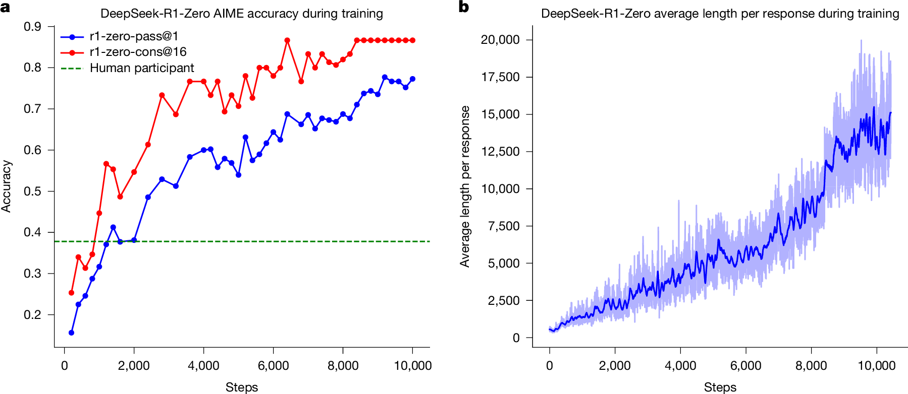
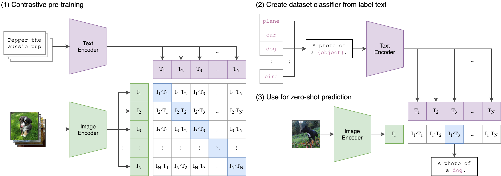

Límites de los LLMs, modelos de razonamiento y sistemas que combinan las dos formas de razonar
Sistemas Inteligentes · Especialización en Inteligencia Artificial · UNAL Manizales · 30 min
Una IA escribió el programa de la empresa de aseo a partir de su descripción, y un solver encontró la asignación
Ustedes verificaron que cumpliera cada regla, con casos revisados a mano y un caso imposible
Z3 encontró contradicciones y lagunas con un contraejemplo, o demostró que no las había
El LLM tradujo la política a reglas; su traducción y sus explicaciones también se revisaron
En los dos casos: la IA propone y algo externo verifica, el solver o ustedes. Ahora, ¿cuándo conviene cada uno?
Exactitud por acertijo completo (%). Redibujado de Lin et al. (2025), ZebraLogic, ICML, Tabla 1, arXiv:2502.01100, CC BY 4.0. o1 se corrió tres veces y se tomó el mejor resultado.



Anthropic, OpenAI y Google cobran los tokens de razonamiento como tokens de salida, aunque no se muestren completos
Según OpenAI, un problema puede generar desde unos cientos hasta decenas de miles de tokens de razonamiento
Claude Sonnet 5.5 cobra US$10 por millón de tokens de salida. Una respuesta de 500 tokens:
sin razonamiento: 500 × US$10 / millón = US$0,005
+10 000 razonando: 10 500 × US$10 / millón = US$0,105
21 veces más, y más tiempo de espera
Cálculo ilustrativo; solo tokens de salida. Precios oficiales consultados el 26 de octubre de 2026: Anthropic · OpenAI · Google.
| Si el problema… | Use | Por qué | En MantenIA |
|---|---|---|---|
| Tiene reglas precisas y el error es costoso (dinero, seguridad, normas) | Solver | Garantía, y un contraejemplo cuando falla | Turnos con certificación; aprobación de compras |
| Llega en lenguaje natural, pero se puede formalizar | LLM + solver | El LLM traduce y el solver verifica; la traducción se revisa | Convertir una política escrita en reglas |
| Crece de forma combinatoria | Solver | El LLM se degrada con el tamaño (ZebraLogic) | Turnos de 40 técnicos en un mes |
| Es abierto, sin regla precisa, y el error es barato | LLM | Rápido y flexible; una persona revisa | Redactar el aviso de turnos al equipo |
Y en todos los casos, compare el costo: tokens de una estrategia frente al tiempo de modelar una vez.
Describa un problema de turnos, horarios o asignación de su organización; pídale una solución a un LLM y verifíquela regla por regla
65 min · PDF de 1 a 2 páginas
Escriba una política real como reglas «si… entonces…»; compare lo que encuentra un LLM con lo que encuentra Z3 en el notebook del Laboratorio 3B
70 min · PDF de 1 a 2 páginas
Entrega: inicio de la semana 3. Enunciados completos en trabajo_independiente.md.

Radford, A. et al. (2021). Learning transferable visual models from natural language supervision. ICML 2021, PMLR 139, 8748–8763.
Unidad 4: de razonar sobre reglas y datos a percibir el mundo con imágenes.
Un sistema que combina las dos formas de razonar de hoy para resolver geometría de olimpiada.